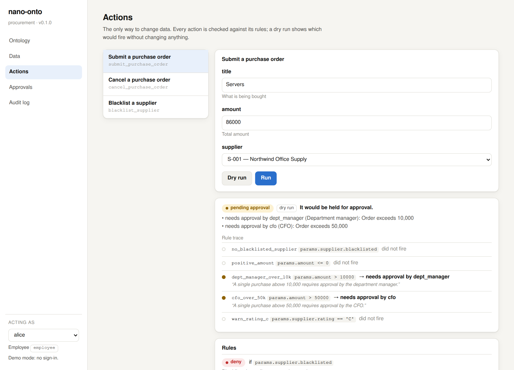
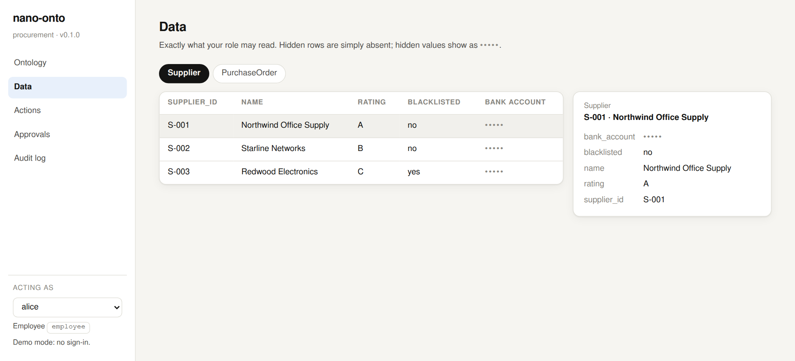
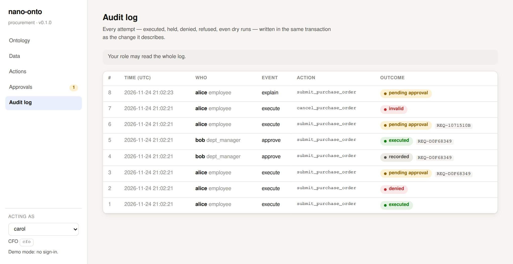

Console
Agents reach nano-onto over MCP. People get a web console on the same engine: the ontology drawn out, the data their role may see, a form for every action, an approvals inbox and the audit log.

It is one static HTML page and a small JSON API, served by the standard library: no frontend build, no extra dependency, no external resources.
Start it
Try it locally, with a user switcher instead of a sign-in:
export NANO_ONTO_SCHEMA=examples/procurement/ontology.yaml NANO_ONTO_DB=shop.db
nano-onto init --seed examples/procurement/seed.json
nano-onto console --demo alice:employee --demo bob:dept_manager --demo carol:cfo --auditor cfo
# open http://127.0.0.1:8787
For real use, give each person a token; the token decides who they act as:
nano-onto token --tokens tokens.yaml --actor carol --role cfo # prints the token once
nano-onto console --tokens tokens.yaml --auditor cfo
| Flag | Meaning |
|---|---|
--tokens FILE |
The tokens file written by nano-onto token (shared with serve-http). Revoking a token takes effect without a restart. |
--demo USER:ROLE |
A demo user (repeatable). The page shows a switcher and nobody signs in. Only allowed when binding to localhost. |
--auditor ROLE |
A role that may read the whole audit log (repeatable). Everyone else sees only their own entries. |
--host, --port |
Where to listen. Default 127.0.0.1:8787. |
What is in it
Ontology. Object types and their links, with the properties hidden from your role marked and row filters spelled out. Below them, every action: who may run it, each rule with its condition, its message and the source it quotes, and the effects it has.

Data. Tables of the objects your role may read. Hidden rows are simply absent and hidden values are masked; select a row to follow its links.

Actions. A form generated from each action's parameters; object references are pickers that list only what you may see. Dry run evaluates the rules and shows the trace without changing anything; Run does it for real. The result says plainly whether the change happened, is held for approval, or was denied.
Approvals. Requests waiting for your role, with their parameters, the rules that held them and the sign-offs so far; approve or reject with a reason. Your own requests are listed with their status, never in your own inbox.

Audit log. Every attempt, newest first; click a row for its parameters and messages.

What it can and cannot do
The console has no powers of its own. Every request goes through the engine as the signed-in user, so:
- it shows only what
onto_queryandonto_getwould show that user; - an action is refused, held or executed exactly as it would be for an agent with the same identity;
- nobody can approve their own request from here either;
- everything done in the console is in the audit log, including dry runs.
Things to know before exposing it:
--demois not authentication. The browser says who it is. It is for trying things out and for screenshots, which is why it only binds to localhost.- Tokens are bearer tokens. They are kept in the browser's session storage and sent with each request. Serve the console over TLS (put a reverse proxy in front) if it leaves your machine.
- Requests must be JSON and come from the same origin; the page loads nothing from other sites.
- The audit log has no role concept in the ontology, so who may read all of it is a deployment choice (
--auditor).
API
The page uses these endpoints, which you can call yourself with the same Authorization: Bearer <token> header:
| Endpoint | Returns |
|---|---|
GET /api/session |
Ontology name and version, and whether the console is in token or demo mode |
GET /api/me |
The signed-in user, role and whether they are an auditor |
GET /api/ontology |
Types, links, roles and actions (with rules) as this user may see them |
GET /api/objects?type=T · GET /api/object?type=T&id=ID |
Objects, with read permissions applied |
POST /api/explain · POST /api/run {action, params} |
A dry run / an execution; the same result object the MCP tools return |
GET /api/approvals |
inbox (waiting for your role), mine (your requests) |
POST /api/approve {request_id, note} · POST /api/reject {request_id, reason} |
The decision's result |
GET /api/audit |
scope (all or own) and the rows |
Regenerate the screenshots on this page with python scripts/console_screenshots.py (needs Playwright and a Chromium).